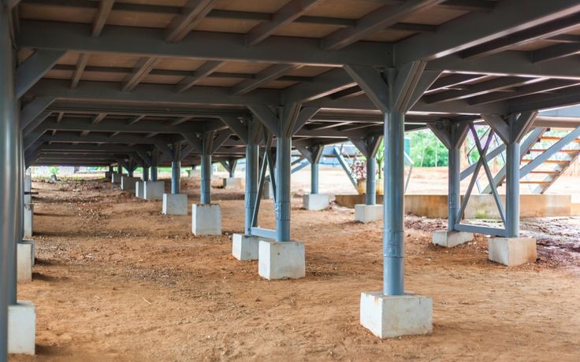
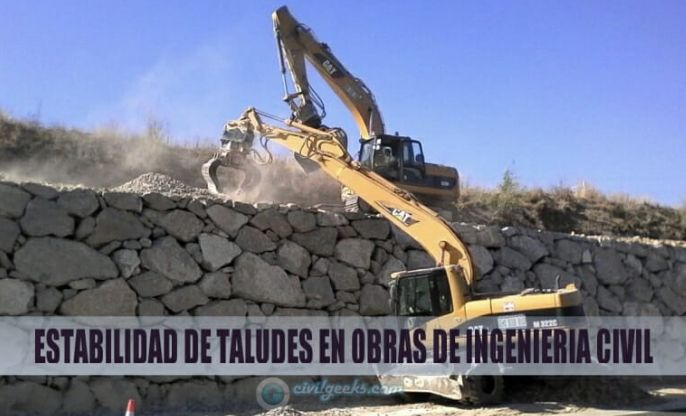
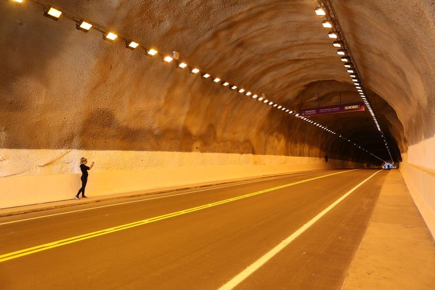
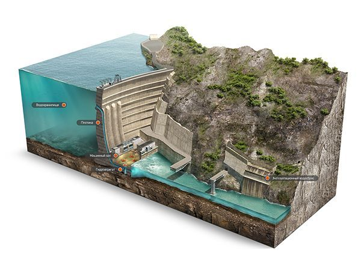
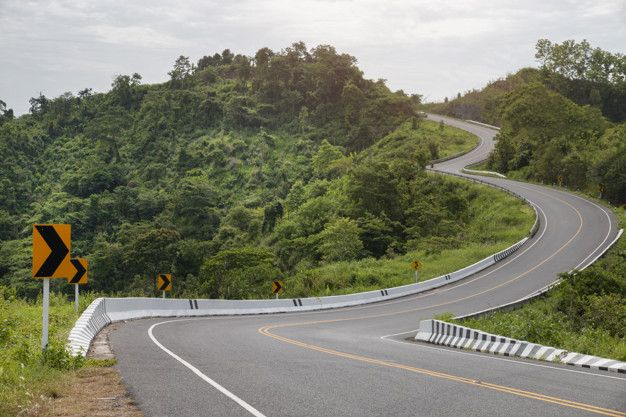

La ingeniería geotécnica es una rama de la ingeniería civil que se encarga de estudiar las propiedades de los suelos y las rocas. Se aplica en el diseño y construcción de obras civiles, como carreteras, puentes, túneles y rascacielos.
| AREAS | EJEMPLOS |
|---|---|
| Cimentaciones | Diseño de zapatas y pilotes  |
| Taludes | Estabilidad de laderas  |
| Túneles | Excavaciones seguras  |
| Presas | Construcción de represas y embalses  |
| Carreteras | Evaluación del terreno para infraestructura vial  |
El objetivo principal de la ingeniería geotécnica es estudiar la interacción entre el terreno y las construcciones. Esto permite diseñar cimentaciones para estructuras como edificios, puentes, presas, túneles y carreteras.